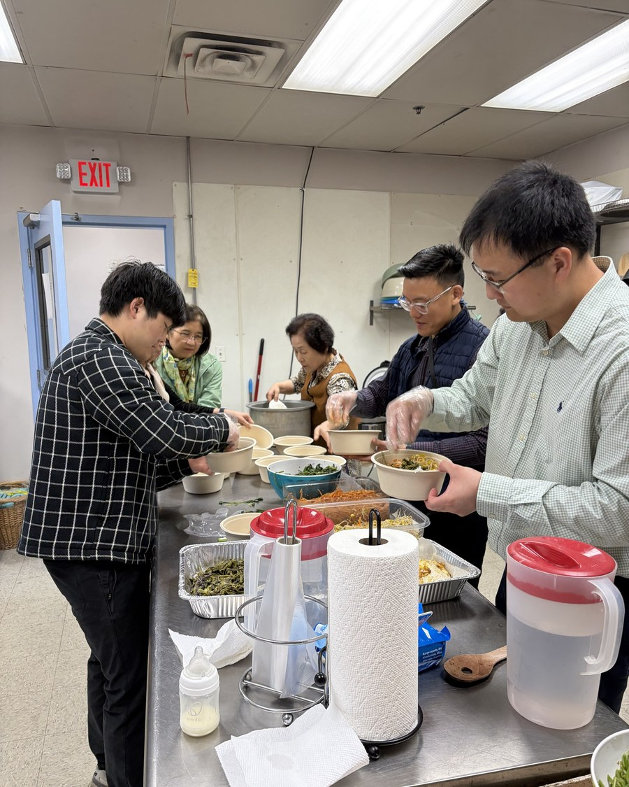

저희는 이런 교회입니다
평범한 사람들이 모여, 평범하지 않은 복음으로 함께 살아갑니다.
저희는 누구인가
데스플레인스의 한 교회 가족
가스펠 교회는 시카고 서북부 지역에 사는 가정과 학생, 이웃들이 모인 교회입니다. 수십 년을 함께한 분도 있고, 지난달에 처음 오신 분도 있습니다. 주일마다 함께 예배하고, 성경 말씀을 있는 그대로 듣고, 평범한 한 주 한 주를 서로 돌보며 지냅니다.
저희는 두 언어로 예배하는 교회입니다. 주일 오전 10시에 한국어 예배와 영어 예배가 각각 다른 방에서 동시에 시작되고, 예배가 끝나면 다 함께 점심을 먹습니다.

믿는 바
함께 붙드는 고백
저희가 함께 하는 모든 일의 바탕이 되는, 오래되고 단순한 기독교의 믿음입니다.
- 성경
- 성경은 하나님의 말씀이며, 무엇을 믿고 어떻게 살아야 하는지에 대한 최종 권위입니다.
- 하나님
- 세상을 지으시고 지금도 붙드시는, 만물을 다스리시는 한 분 하나님을 믿습니다.
- 예수 그리스도
- 예수님은 하나님의 아들이시며, 우리를 대신하여 십자가에 죽으시고 다시 살아나셨습니다. 구원은 오직 그분께만 있습니다.
- 은혜
- 우리는 우리가 이룬 무엇 때문이 아니라, 오직 은혜로, 오직 믿음으로, 오직 그리스도로 구원을 받습니다.
- 교회
- 교회는 그리스도의 가족이며, 성도들 가운데서 세워진 장로들이 이끌고, 서로 사랑하며 그리스도를 알리도록 보내심을 받았습니다.
- 세례와 성찬
- 이 두 가지 표는 그리스도께서 친히 교회에 주신 것이며, 하나님께서 그 백성에게 주신 약속의 인印입니다.
저희는 앞서간 장로교회들과 같이, 웨스트민스터 신앙고백과 소요리문답을 성경이 가르치는 바를 바르게 요약한 것으로 받아들입니다.

교회의 역사
여기까지 온 길
가스펠 교회는 1991년 장성장로교회로 시작되었습니다. 그 뒤로 임마누엘교회, 오네스교회를 거쳐 지금의 가스펠 교회가 되었습니다.
이름은 바뀌었지만 목적은 한 번도 바뀌지 않았습니다. 복음을 땅 끝까지 전하는 것입니다.